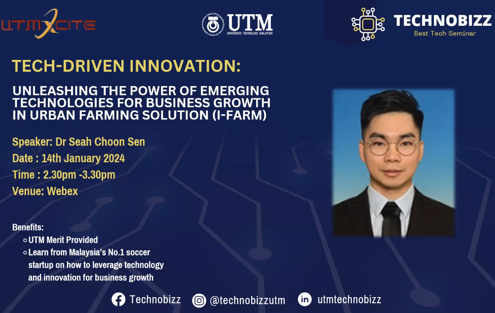

January 10, 2024
Assignment 3: Report
Industrial Talk 2: Wrote a report consisting of a description of the system development, history, technology and tools used in Credence's system development.
The speaker shared her personal journey and experience studying data engineering at UTM, providing valuable insights into the field and the necessary skills. I gained exposure to the detailed analytics process,
from data collection and transformation to model building and visualization. This overview helped me understand various roles, such as data engineering and data analysis. The presentation highlighted some technologies
like databases, visualization tools, ETL tools, and programming languages. Personally, I think Credence's workplace culture, emphasizing communication, learning, empowerment, and celebrating success, was particularly motivating.
Moreover, providing more details about specific projects and challenges faced could be interesting. Overall, it was insightful, and similar industry talks exposing students to the real working world would be beneficial.
My aim is to become an excellent system developer by continuously learning new technologies, polishing my skills, and gaining experience through projects and internships. I'll
stay eager to explore new tools and programming languages in this rapidly evolving sector. I'll actively seek opportunities to work on a variety of analytics projects and learn
from mentors. With dedication and resilience, I'm excited to develop into a competent system developer who can design end-to-end data solutions and deliver meaningful insights through analytics.

The talk provided the overview of i-Farm's business strategy and goals, introducing the innovative idea of bringing fresh vegetables directly to residents through neighborhood-based vertical farming racks.
The well-thought-out business model and revenue streams, along with promising profitability projections, were highlighted. The use of IoT and machine learning for plant growth optimization showcased innovation.
i-Farm's market research indicates a positive trajectory, targeting health-conscious residents and successful pilots with government agencies. I'm very impressed by their ambitious vision to expand across
Malaysia and Southeast Asia, and improve regional food security. They also collaborate with local farmers to share technology which offers mutual benefits. A suggestion for improvement is to conduct more testing
of crop varieties and business model variations before scaling across regions. Overall, i-Farm presents an innovative urban farming model that could enhance food resilience and sustainability if successfully executed.
I gained perspective on how vertical farming and technology can transform agriculture.
The i-Farm model provides an innovative solution for providing fresh organic produce to communities by utilizing vertical hydroponic farming systems deployed locally. I found it inspiring to learn how they
took the challenges of the pandemic as motivation to find a new way to leverage technology to improve food security. The i-Farm model allows consumers to have a deeper connection with the source of their food.
I learned how hydroponics and machine learning can be used to improve fresh food access in innovative ways. I gained valuable perspective on the importance of local food systems.
Summary
The Technology and Information Systems course has been a comprehensive exploration of the dynamic landscape of technology and its impact on information systems. Throughout the semester, we delved into fundamental
concepts such as database management, programming languages, network architectures, and cybersecurity. Practical labs and design thinking projects provided hands-on experience, fostering a deeper understanding of
real-world applications. The variety of assignments helped us explore the use of current technologies. The course not only equipped us with technical skills but also emphasized the importance of adaptability in a
rapidly evolving technological environment. Additionally, this course has developed our thinking skills, teamwork skills, and communication skills. In conclusion, it has been a rewarding journey that has expanded
our knowledge and prepared us for the challenges and opportunities in the ever-changing world of technology.